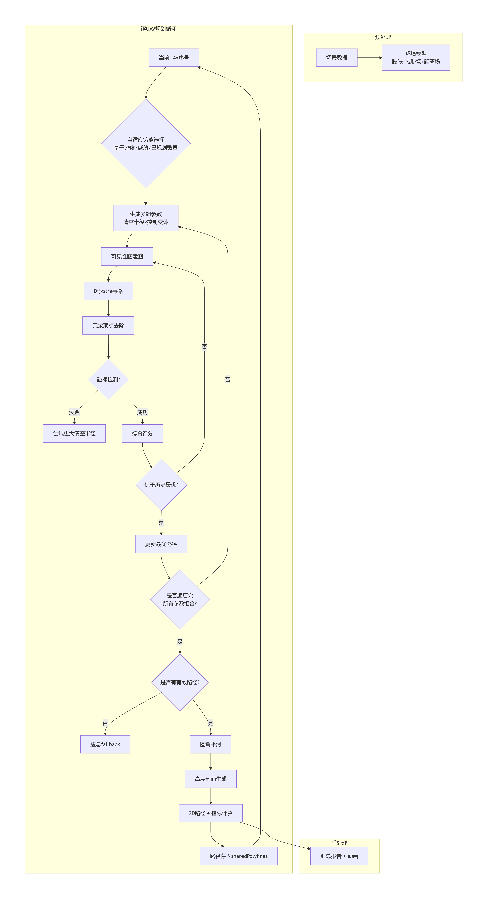
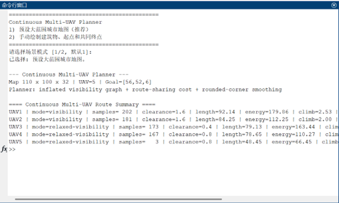
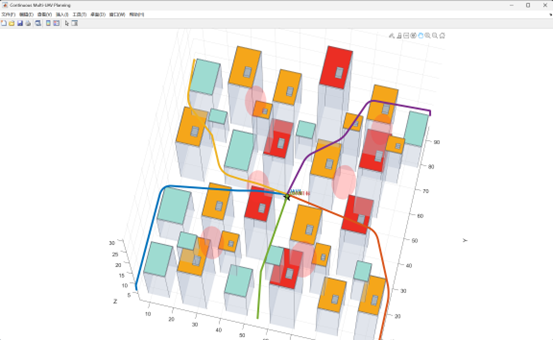
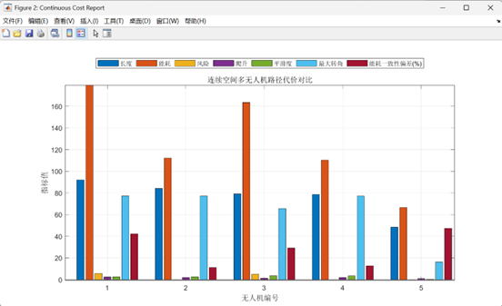

强化学习与人工旅鼠算法融合的无人机路径规划研究
本项目实现了一套面向城市环境的多无人机协同三维轨迹规划系统。系统能够在包含建筑物障碍物和威胁区域的复杂城市空间中，为多架无人机自动生成从各自起点到共同目标的无碰撞、平滑可飞行、协同分散的连续三维轨迹。
2.1 面临的核心挑战
| 挑战 | 描述 |
|---|---|
| 高维空间 | 三维连续空间规划，计算复杂度高 |
| 多机协同 | 多架无人机需共用空域，避免路径过度集中 |
| 障碍物规避 | 城市建筑密集，需安全绕行 |
| 可飞行性 | 路径需平滑连续，符合无人机运动学约束 |
| 鲁棒性 | 任意起点终点组合均需有解 |
2.2 核心解决方案
采用分层解耦加枚举搜索加多级保底的技术路线：
环境预处理 → 自适应策略选择 → 多候选路径生成 → 综合评分与最优选择 → 路径平滑与高度优化 → 输出三维可飞行轨迹及性能报告。
多清空半径枚举 多层协同机制 自适应调参 混合节点图 防碰撞圆角 三层保底机制
| 参数 | 数值 |
|---|---|
| 地图规模 | 110×100×32 网格 |
| 无人机数量 | 最多8架 |
| 飞行高度范围 | 3至28单位 |
| 安全清空半径 | 0至1.6可调 |
| 平滑半径 | 最大3.0单位 |
| 单机规划时间 | 约2至5秒（MATLAB环境） |
6. 项目价值：工程可部署的城市多无人机协同规划解决方案，平衡算法复杂度与路径质量。
整体流程：场景构建与环境预处理 → 自适应策略选择 → 多候选路径生成 → 路径评分与最优选择 → 圆角平滑+低爬升高度剖面 → 三维路径生成与指标评估 → 可视化与动画
buildContinuousEnvironment 二值化建筑、高度图、膨胀障碍、威胁场、距离场。planOneContinuousRoute 枚举清空半径(1.6~0.0)与控制变体，构建可见性图+Dijkstra。removeRedundantVertices 视线剪枝算法精简控制点。roundedPolyline 贝塞尔曲线B(t)=(1-t)²P₀+2(1-t)tP₁+t²P₂，碰撞检测。lowClimbProfile 基础巡航7.0+威胁调整+移动平滑，范围3-28。
📊 算法流程图
1. 选择预输入地图与无人机参数 / 手动输入地图与无人机参数（当前展示预输入）

📥 参数输入界面
2. 仿真结果示例

🚁 三维轨迹可视化
3. 无人机路径代价对比示例图片

📊 多无人机路径代价量化对比
链接地址：
https://github.com/artweirdrama/URTP-UAV-path-palnnimg/blob/main/run_multi_uav_continuous_planner.m